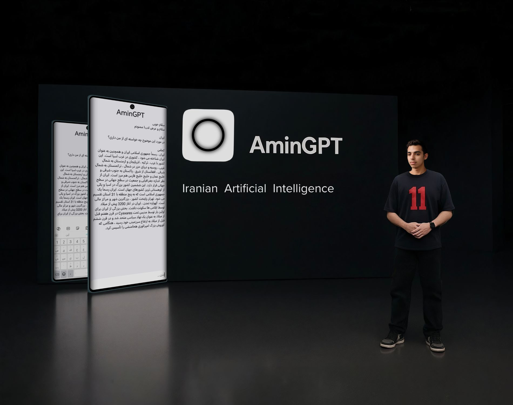

یک مدل هوش مصنوعی مکالمهمحور است به زبان فارسی که با طراحی ساده، انسانی و پاسخ دهی هوشمند طراحی شده است. این چتها بر پایه فناوریهای ساختهشده و قابل درک برای کاربران گفتوگوی و تولید پاسخهای دقیق، کاربردی و خلاقانه است.
AminGPT یک دستیار هوش مصنوعی بومی و پیشرفته است که با هدف سادهتر کردن زندگی دیجیتال کاربران طراحی شده. این اپلیکیشن با ترکیب هوش مصنوعی قدرتمند و یک رابط کاربری ساده و شیک، تجربهای متفاوت از تعامل با فناوریهای نوین ارائه میدهد.
با AminGPT میتوان به راحتی به سوالات علمی، آموزشی و روزمره پاسخ داد، متون را ترجمه کرد، ایدههای خلاقانه برای تولید محتوا پیدا کرد و حتی از منابع گسترده و معتبر علمی بهرهمند شد. برنامه از زبانهای فارسی و انگلیسی به صورت کامل پشتیبانی میکند و قابلیت تنظیم لحن پاسخها از رسمی تا دوستانه را دارد، تا متناسب با نیاز هر کاربر باشد.
رابط کاربری مینیمال و مدرن آن باعث میشود که استفاده از برنامه برای هر کسی—از کاربران تازهکار گرفته تا حرفهای—راحت و لذتبخش باشد. AminGPT میتواند به عنوان مشاور شخصی، کمک آموزشی، ابزار تحقیق و حتی همراه در فعالیتهای روزمره عمل کند.
ویژگیهای کلیدی AminGPT شامل پاسخگویی سریع و دقیق، پشتیبانی از چند زبان، امکان سفارشیسازی، دسترسی به منابع گسترده و طراحی کاربرپسند است. این برنامه نه تنها یک ابزار هوش مصنوعی است، بلکه یک همراه هوشمند است که همیشه آماده کمک به کاربران برای یادگیری، تولید محتوا و حل مسائل روزمره میباشد.
در مجموع، AminGPT تجربهای کامل و همهجانبه از هوش مصنوعی ارائه میدهد و به کاربران امکان میدهد در سریعترین زمان، بهترین پاسخها و راهکارها را دریافت کنند، به منابع علمی و اطلاعاتی گسترده دسترسی داشته باشند و فعالیتهای روزمره و حرفهای خود را آسانتر کنند.ز